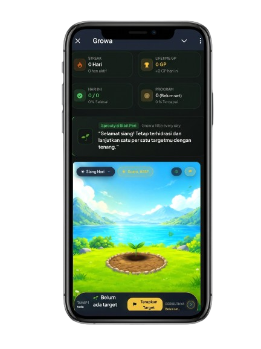
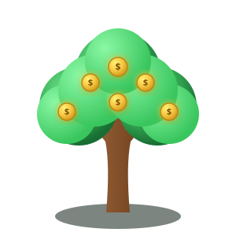

Pohon uang (Money Tree)
Konsep ini menjadi inspirasi awal Growa: menanam dan merawat sesuatu yang diharapkan tumbuh serta menghasilkan nilai.
Dalam Growa, metafora pohon diterjemahkan menjadi tindakan harian dan perkembangan yang bisa dibuat pengguna, sehingga pengguna menyadari bahwa perjalanan kesuksesan mutlak membutuhkan proses.
Hampir setiap manusia menginginkan kehidupan yang lebih baik.
Kita ingin sukses dalam karier, membangun bisnis, mencapai kebebasan finansial, mengembangkan potensi, dan menjadi versi terbaik dari diri kita sendiri.
Kita menetapkan target. Kita membuat rencana. Kita membayangkan masa depan yang lebih baik.
Mimpi besar membutuhkan kompas tindakan harian.
WE WANT EXTRAORDINARY RESULTS, BUT ARE WE BUILDING THE QUALITY TO ACHIEVE THEM?
"You Cannot Expect a Strong Tree from a Seed You Never Nurture."
Bayangkan seseorang ingin menumbuhkan pohon yang besar dan kuat. Apakah cukup hanya dengan membayangkan pohon itu tumbuh?
Tidak. Benih perlu ditanam, dirawat, dan diberi waktu untuk bertumbuh. Begitu pula dengan manusia. Kedewasaan yang berkelanjutan membutuhkan fondasi pengetahuan, keterampilan, kebiasaan, tindakan, dan konsistensi.
Jika kualitas yang kita bangun hari ini belum memadai, bagaimana kita mengharapkan kualitas hasil yang berbeda esok hari?
"Every Action Has Consequences."
Setiap tindakan membawa konsekuensi. Tindakan yang berulang dapat membentuk kebiasaan. Kebiasaan dapat memengaruhi kemampuan dan kualitas keputusan. Seiring waktu, semua itu dapat memengaruhi hasil yang kita capai.
Satu tindakan mungkin terlihat kecil. Namun, ketika tindakan yang tepat dilakukan secara konsisten dan diperbaiki dari waktu ke waktu, dampaknya dapat terakumulasi.
Inilah gagasan melalui Law of Effection: hubungan erat antara tindakan, dampak, dan hasil yang terbentuk dari waktu ke waktu.
"People measure success by the results they get, but rarely measure the actions that create those results."
"Orang mengukur kesuksesan dari hasil yang mereka peroleh, tetapi jarang mengukur tindakan yang membentuk hasil tersebut."
Alasannya adalah karena mereka bisa melihat bukti bahwa mereka telah melakukan sesuatu secara konsisten.
Setiap hari yang bertambah membuat perjalanan mereka terasa nyata. Mereka bukan hanya melakukan aktivitas, tetapi juga melihat rekam jejak dan perkembangan yang telah dibangun.
Bagaimana jika prinsip yang sama diterapkan pada pertumbuhan diri, pembelajaran, keterampilan, dan pencapaian tujuan hidup?
Ketiganya dirancang untuk membantu pengguna melihat hubungan antara tindakan yang mereka lakukan hari ini dan perjalanan pertumbuhan yang sedang mereka bangun.
Mengubah tujuan dan impian menjadi tindakan harian yang dapat dilakukan secara terstruktur.
Mencatat kemajuan melalui sistem Growth Points (GP), persentase streak, dan histori aktivitas.
Menggambarkan perkembangan diri melalui metafora pohon yang bertumbuh di panggung alam nyata.
Mulai secara gratis, atau buka seluruh fitur tanpa batas seharga segelas kopi.
Catat tugas harian dengan jam pengingat otomatis yang dikirim langsung ke layar HP via Web Push.
Pohon bertumbuh dari Bibit hingga Pohon Uang seiring akumulasi Growth Points yang diperoleh.
Taman virtual dengan 4 tema pulau, siklus waktu nyata (pagi-malam), audio sintetis, dan satwa dinamis.
Pecah impian besar menjadi pos-pos pendakian (*milestones*) terukur dari kaki hingga puncak.
Timer fokus 15m, 25m, dan 50m dengan pencatatan menit fokus harian tanpa gangguan distraksi.
Refleksi rasa syukur harian, pencatat emosi, dan evaluasi diri di malam hari.
Untuk kamu yang baru memulai langkah pertama.
Untuk pertumbuhan berkelanjutan tanpa hambatan.
SELAMAT MENGGUNAKAN GROWA. MULAI DARI LANGKAH KECIL, RAYAKAN SETIAP KEMAJUAN, DAN JANGAN BERHENTI BERTUMBUH.